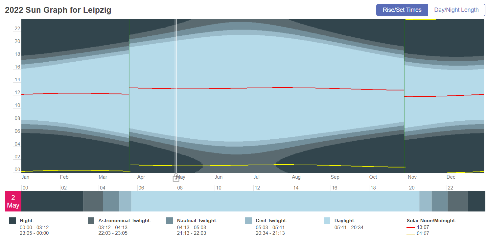
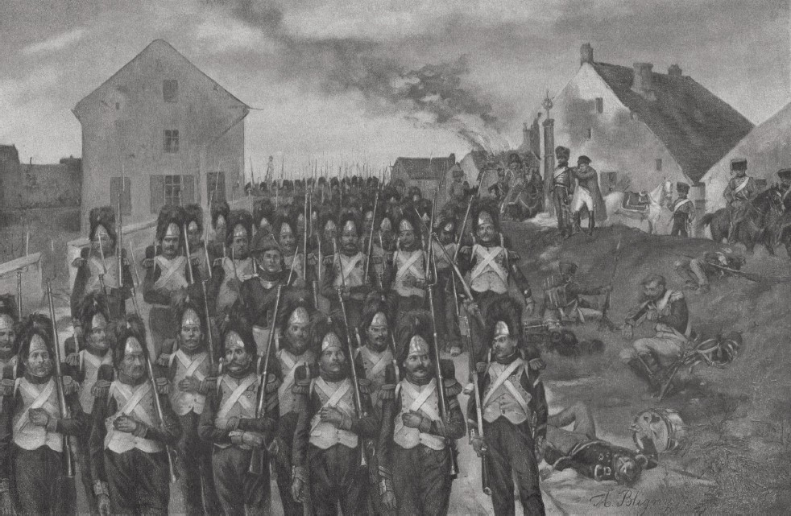
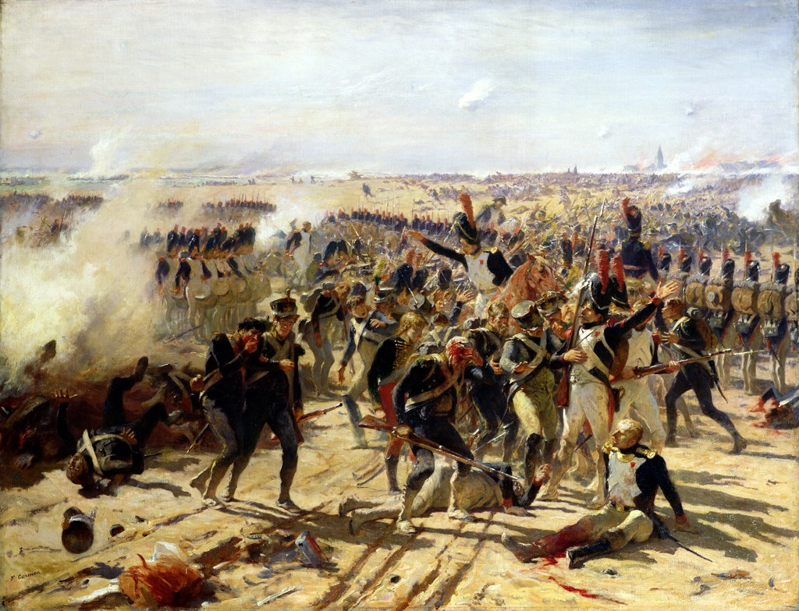

뤼첸 전투 (10) - "La garde au feu!"
게시: 2022-11-07T06:30:50+09:00
5월 초 라이프치히 인근에서는 7시 30분 경부터 해가 지기 시작합니다. 기습을 위한 위치 확보 때문에 그 전날 밤부터 한숨도 자지 못하고 행군을 해야 했던 연합군은 물론, 아침부터 행군과 전투에 시달렸던 프랑스군도 해가 진 이후 어둠 속에서 싸우기에는 너무 지친 상태였습니다. 게다가 아마 그날은 달도 밝지 않은 날이었나 봅니다. 연합군 사령부에서 이 전투를 참관하던 영국군 캐쓰카트(George Cathcart) 장군은 이렇게 적었습니다. "밤이 되어 전투가 잦아들 때, 양군은 서로 평행의 위치에서 대치하고 있었다. 보아르네(Beauharnais) 부왕이 도착한 이후 프랑스군은 연합군의 우익을 상당한 정도로 우회 압박하여 페가우(Pegau)를 통한 연합군의 퇴각로를 위협하는 위치를 점거하고 있었다. 그러나 이미 시간이 늦은 시점이었고 그 이후의 밤은 너무 어두워 부왕은 자신의 위치가 가진 이점을 충분히 살리지 못했다."

(이 그래프에 따르면 라이프치히 인근에서는 5월 2일 해가 지는 시간은 8시 34분입니다. 그러나 이건 1916년부터 독일에 서머타임제가 도입되었기 때문이고, 서머타임제가 없었던 나폴레옹 시대에는 7시 34분에 해가 졌을 것입니다. 저 그래프에서 3월말과 10월말에 단락이 생기는 것이 서머타임 시작일과 종료일입니다.) 그러나 병사들이 지친데다 해가 졌기 때문에 못 싸운다는 것은 비트겐슈타인이나 외젠에게는 상식적인 이야기일지는 몰라도 나폴레옹에게는 아니었습니다. 나폴레옹은 바로 이때가 최후의 일격을 가할 순간이라고 판단했습니다. 저무는 해를 보며 나폴레옹은 아주 간결한 명령을 내렸다고 합니다 "80문의 대포." 이 명령은 근위대의 드루오(Antoine Drouot)에게 내리는 것이었고, 그는 근위대가 가진 포병대 전체인 54문을 끌어모아 이미 카야 마을 남서쪽에서 연합군과 포격전을 벌이고 있던 네 장군의 포병대에게로 달려갔습니다. 근위 포병대가 가세한 프랑스군 포병들은 4개 마을 안쪽에서 그야말로 불과 쇳덩어리를 뿜어댔습니다. 근위대라고 딱히 더 크고 위력적인 대포를 가진 것은 아니었습니다만, 원래 신체 조건이 좋았던 근위대원들이 예비대로서 하루 종일 대기만 하고 있다가 다들 격렬한 전투로 지친 늦은 저녁에 전장에 투입되자 전황이 확실히 뒤집혔습니다.

(앙투완 드루오입니다. 나폴레옹보다 5살 연하는 그는 낭시(Nancy)의 가난한 제빵사의 12명 자녀 중 세째로 태어났습니다. 어려서부터 똑똑하고 공부를 잘하여 그를 가르치던 동네 수도원의 추천으로 장학금을 받고 낭시 대학의 외부수강생이 되기도 했습니다. 거기서도 두각을 나타낸 그는 혁명 발발 이후 창설된 샬롱-장-샹파뉴(Châlons-en-Champagne) 포병학교에 19세의 다소 늦은 나이로 지원했는데, 경쟁률이 8대1로 치열했습니다. 그는 돈이 없었으므로 150km 거리를 걸어서 시험을 보러 갔고, 거기서 유명한 과학자 라플라스(Pierre-Simon Laplace)를 의장으로 하는 시험관들의 구두시험에서 1위로 입학했습니다. 그때 정말 시험을 잘 봤는지, 나중에 라플라스가 나폴레옹을 만났을 때, 라플라스는 나폴레옹에게 '자신이 주재한 시험에서 가장 인상 깊었던 수험생은 폐하의 부관으로 있는 드루오 장군이었다'라고 말했습니다. 드루오는 간혹 트라팔가 해전과 워털루 전투에 모두 참전한 드문 장군이라고 지칭되기도 하는데, 이건 정확한 사실은 아닙니다. 그는 빌뇌브 제독의 함대 소속인 오르탕스(Hortense) 호에 육군으로 탑승하고는 있었으나, 트라팔가 해전이 벌어지기 전에 오르탕스 호가 다른 임무로 함대에서 떠났기 때문에 트라팔가 해전에 직접 참전하지는 않았습니다. 드루오는 계속 포병 장교로 복무했고, 나폴레옹의 정적인 모로 장군이 1800년 대승을 거둔 호헨린덴 전투에서 포병 대위로 참전했습니다. 즉, 나폴레옹과는 연이 멀었고, 승진도 상당히 느린 편이었지요. 그러나 결국 낭중지추라고 그의 능력은 사람들의 눈에 띌 수 밖에 없었습니다. 1809년 아스페른-에슬링 전투 이후 오스트리아 빈의 쇤브룬 궁전에서 나폴레옹의 질문에 워낙 똑부러지게 대답을 하는 바람에 나폴레옹의 눈에 띄었고, 이후 승진을 거듭했습니다. 그는 나폴레옹을 보좌하여 엘바 섬에도 갔었고 워털루 전투에서 참전했습니다. 복귀한 부르봉 왕조에 의해 그는 반역죄로 재판정에 섰지만, 워낙 셀프 변론을 잘하여 무죄 석방되었을 뿐만 아니라 퇴역 연금까지 타냈습니다. 그는 이후 부르봉 왕정에서도 이런저런 보직을 제안 받았으나 모두 거절했습니다.) 이들이 30분 동안 4개 마을 한복판을 대포알로 휩쓴 뒤, 그동안 아껴두었던 신참 고참 근위대 앞에 직접 말을 타고 나서서 근위대에 대한 전통적인 공격 명령을 외쳤습니다. "La garde au feu!" (근위대, 화재 진압!)

('라-가르-도-쁘!'(La garde au feu)라는 공격 명령은 직역하면 'The Guard at the fire!' 즉 '근위대는 화재에 달려 들라!' 정도입니다. 이는 나폴레옹 근위대의 전통적인 명령어로서, 1815년 운명의 워털루 전투에서도 나폴레옹은 똑같이 이 명령어를 외쳤다고 합니다.) 모르티에(Édouard Adolphe Mortier) 원수가 이끈 신참 근위대 4개 여단이 전진을 시작했고, 그 뒤로는 나폴레옹이 최후의 순간까지 애지중지하며 전투에 투입하지 않곤 했던 유명한 고참 근위대(Vieille Garde)가 뒤따랐습니다. 뿐만 아니라 그 뒤에는 근위 기병대 전체가 천천히 진격했습니다. 나폴레옹은 이 막판에 정말 가진 모든 자원을 톡톡 털어넣는 모험을 한 셈이었습니다. 아마 보로디노 전투에서 끝까지 근위대를 아끼다가 결정적인 승리를 거두지 못한 것이 나폴레옹에게도 아쉬웠던 것 같습니다. 확실히 근위대에 키 큰 병사들을 끌어모아 화려한 군복과 커다란 곰가죽 모자를 씌워놓은 것은 효과가 있었습니다. 이미 전설적인 명성을 가진 이들이 여러 개의 밀집 대오로 보무도 당당히 전장에 나타나자, 기진맥진한 아군과 적군 모두에게 상당한 심리적 효과를 주었습니다. 하루 종일 고생하던 네의 제3 군단 병사들도 용기백배하여 다시 총을 들고 그들 앞에 떼를 지어 진격했고, 적군은 주춤거렸습니다. 무엇보다 나폴레옹이 전체 근위대를 톡톡 털어넣자, 하루 종일 소극적인 움직임만 보이고 있던 마르몽까지 나설 수 밖에 없었습니다. 북쪽에서 근위대가 몰려오는데다 마르몽의 제6 군단이 스타지들 마을에서 출격하여 서쪽을 협공하자 라나 마을이 제일 먼저 프랑스군에게 함락되었습니다. 뿐만 아니라 동쪽에서는 막도날의 제11 군단을, 그리고 서쪽에서는 근위대을 맞아 싸워야 했던 클라인괴르쉔도 곧 함락되었습니다. 이제 남동쪽의 그로스괴르쉔 마을 차례였습니다. 그러나 연합군 포병대가 잔뜩 배치되어 있던 그로스괴르쉔 마을 앞에서는 근위대도 별 수 없이 피떡이 되어 쓰러질 수 밖에 없었습니다. 그럼에도 기세라는 것이 있다보니 프랑스군은 계속 밀려들었고, 결국 그로스괴르쉔에서도 연합군은 프로이센 유격병 중대 하나만 남겨두고 모조리 퇴각하는 상황에 이르렀습니다. 그럼에도 불구하고, 연합군은 다시 한번 최후의 반격을 가하여 끝내 그로스괴르쉔을 지켜냈습니다. 이건 연합군, 특히 프로이센군의 사기가 정말 좋았기 때문에 가능한 일이었습니다. 이 날 밤 전투가 끝난 뒤 샤른호스트와 그나이제나우가 공동으로 제출한 전투 보고서를 보면 '연합군에서는 전투 중 부상병이 후송되는 일이 없었다'라는 소리가 나옵니다. 당시 전투에서 장교들이나 부사관들이 골치 아파하던 부분 중 하나가 부상병의 처리였습니다. 당연히 전투에서는 부상병이 많이 발생하기 마련인데, 부상병은 전사자보다 더 안 좋은 결과를 냈습니다. 부상 입은 전우를 후송한다는 핑계를 대고 멀쩡한 병사 1~2명이 함께 전투 현장에서 이탈하기 때문이었습니다. 그런데 뤼첸 전투 연합군에서는 아무도 부상병 후송 핑계를 대고 후방으로 빠지는 일이 없었다는 것으로서, 샤른호스트와 그나이제나우는 연합군의 사기가 매우 높았다는 것을 표현한 것입니다.

(이건 1809년 5월 아스페른-에슬링 전투의 모습입니다. 저 뒤에서 굳건히 대오를 이룬 근위대 뒤에서 부상병들이 무질서하게 후퇴하는 와중에 전우를 부축한다는 핑계로 사지 멀쩡한 병사들도 꽤 섞인 것을 보실 수 있습니다.) 하지만 모든 인간은 결국 지치기 마련이고 밤에는 볼 수가 없는 법입니다. 양측 모두 더 투입할 예비대가 떨어지고 해가 저물자, 누가 시킨 것도 아닌데 자연스럽게 전투의 열기는 식기 시작했고 총성이 잦아들었습니다. 프랑스군은 이미 점령한 3개 마을 쪽으로 물러났고, 연합군도 하루 종일 헛되이 피를 흘렸던 그로스괴르쉔에서 슬금슬금 물러나 그 남쪽에 집결했습니다. 결국 연합군의 위치는 5월 2일 아침에 전투가 시작될 때의 그 원위치로 되돌아간 셈이었습니다. 이후에도 일부 전방 부대간에 어둠 속에 충돌이 벌어지기는 했으나, 그 이외에는 여기까지가 5월 2일 뤼첸 전투의 종결이었습니다. 밤 9시가 되어 더 이상 전투가 벌어지지 않을 것이 분명해지자, 짜르와 프로이센 국왕은 일단 모나쉔휘겔 언덕을 떠나 후방의 숙소로 돌아갔습니다. 이 두 군주는 그 날 전투가 무승부였으며, 다음 날 다시 전투가 벌어질 것임을 전혀 의심하지 않았습니다. 그러나 이후 몇 시간 동안 상황은 이 두 군주의 예상과는 전혀 다른 방향으로 바뀝니다. Source : The Life of Napoleon Bonaparte, by William Milligan Sloane Napoleon and the Struggle for Germany, by Leggiere, Michael V https://erenow.net/ww/waterloo-battlefield-guide/11.php https://fr.wikipedia.org/wiki/Antoine_Drouot